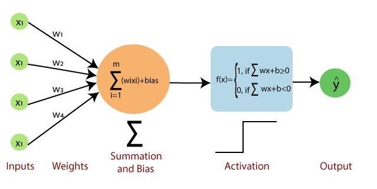
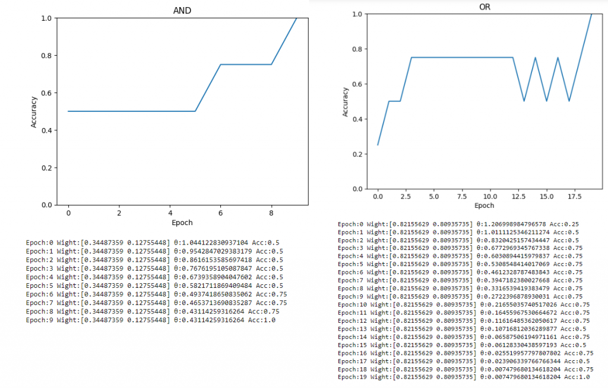

【day25】手刻最簡單的神經網路-單層感知器（Single Layer Perceptron）
發布日期: 2022-09-29 17:00:26
原文連結: https://ithelp.ithome.com.tw/articles/10300823
課程剩下最後的6天，我們今天要來增加你對神經網路的印象，所以今天要來手刻最簡單的神經網路單層感知器（Single Layer Perceptron）
單層感知器（Single Layer Perceptron）
你有想過什麼是最基本的神經網路嗎?答案就是單層感知器（Single Layer Perceptron）。你可以把這個技術想像成我們在課堂最一開始學習到的DNN神經網路的前身，我們看到以下這張圖片你可能就了解為什麼我這麼說了。

圖片來源:https://medium.com/nerd-for-tech/flux-prediction-using-single-layer-perceptron-and-multilayer-perceptron-cf82c1341c33
這張圖片已經包含了所有單層感知器該知道的知識，不過我們還是大致上說一下單層感知器做了哪些事情。單層感知器有三的必要的參數分別就是X、W、B，用數學式表達這三個之間的關係就是f(X) = WX+b，與我們DNN的意思相同X代表輸出，W代表權重(也是我們需要訓練的參數)，B則是偏移量，單層感知器的作法就是利用WX+b的方式計算出f(x)，並以0為分界線，來判斷出最後的結果，我們用程式表達的方式如下
if dot(W,X) - b >=0:
fx = 1
else:
fx = 0
我們可以看到單層感知器不像DNN一樣有很多個輸出，而是只有一個輸出f(x)，並且這一個輸出只會有0與1的結果，這代表單程感知器只能對資料做二分法，超過則沒辦法判斷。
訓練用的參數
先前我們在用pytorch訓練神經網路時，我們需要設定epoch、learn rate與還有損失函數(loss function)與反向傳播 (Backpropagation)，但我們在單層感知器並沒有反向傳播的動作，所以單層感知器是只使用前向傳播 (Forwardpropagation)的方式訓練出來的。
我們先來快速的講解一下反向傳播是什麼。反向傳播是一種用輸出與實際值比對(loss)後重新訓練神經網路的方式，我們目前的課程中，都有使用到反向傳播的方式來訓練程式的，反倒是沒有使用過"只有"前向傳播的網路，這是因為反向傳播能夠損失函數計算目前數值與實際數值之間的誤差，最後將這個誤差更新到每一個隱藏層，優化每個隱藏層神經網路。
那前向傳播是什麼呢?簡單來說就是判斷目標與實際值，如果數值太大就往下降，如果太小就往上增加，直接更新整個權重在重新做計算。
這樣你了解到為什麼只有前向傳播的網路到後期沒人在使用了吧，因為後期的神經網路越來越多層，越來越混亂，如果是更新全部的權重，可能會導致每次產生的結果完全不一樣，就算條件設立的在多都無法穩定的更新。
而我們今天要學習的單層感知器就是一種只有前向傳播的單的神經網路，所以我們只需要調整epoch與learn rate就可以了。
手刻單層感知器
今天的目錄如下:
- 1.設定數據集資料
- 2.架構神經網路模型與功能
- 3.使用模型與功能
設定數據集資料
我們今天要來用單層感知器來實現一些邏輯閘(AND、OR)的功能，所以第一步就是設立邏輯閘的資料。
AND_x_train = np.array([[0,0],[0,1],[1,0],[1,1]])
AND_y_train = np.array([0,0,0,1])
AND_x_test = np.array([[0,1],[1,1],[0,0],[1,0]])
OR_x_train = np.array([[0,0],[0,1],[1,0],[1,1]])
OR_y_train = np.array([0,1,1,1])
OR_x_test = np.array([[0,1],[1,1],[0,0],[1,0]])
架構神經網路模型與功能
接下來我們可以開始定義model內部的計算公式，剛剛提到公式是WX+b，在這裡的b指的就是向量的角度的數值，我們可以利用國中學習到的內積公式可以反推COSθ(a﹒b = |a|x|b|COSθ)，最後ACOS算出b值，在這邊我將程式碼都寫成像是keras的方式方便讓你理解
class Perceptron:
def model(self,x):
self.b = np.dot(self.w, x) / (np.linalg.norm(self.w) * np.linalg.norm(x))
self.b = math.acos(self.b)
# W﹒X - b > 0
return np.dot(self.w, x) >= self.b
定義好model後我們就可以用開始定義訓練方式了，在最開始說到若數值大於0輸出為1，所以我們要透過公式來降低或提高權重，而這個公式就是W = W + lr*X這樣就可以使用學習率的方式來更新權重
#隨機初始化權重
self.w = np.random.uniform(-0.5, 0.5, X.shape[1])
#測試是否大於0
y_pred = self.model(x)
#若輸出要為1但是結果<0就要提高權重
if y == 1 and not y_pred:
self.w += lr * x
#若結果為0但結果>0就要降低權重
elif y == 0 and y_pred:
self.w -= lr * x
統計正確的結果，方便後續計算準確率
else:
acc+=1
將以上的程式加入epoch來重複訓練，並且紀錄每一個epoch的結果
def fit(self, X, Y, epochs = 100, lr = 0.05):
self.w = np.random.uniform(-0.5, 0.5, X.shape[1])
self.result = {'acc':[],
'w':[],
'b':[],
'epoch':[]
}
for i in range(epochs):
acc = 0
for x, y in zip(X, Y):
y_pred = self.model(x)
if y == 1 and not y_pred:
self.w += lr * x
elif y == 0 and y_pred:
self.w -= lr * x
else:
acc+=1
#紀錄資訊
self.result['epoch'].append(i)
self.result['acc'].append(acc/len(X))
self.result['w'].append(self.w)
self.result['b'].append(self.b)
#全部預測成功中斷程式
if acc / len(X) ==1:
break
為了觀看我們訓練的過程，我們一些資料化成圖表，一些資料用print的方式顯示出來
def show(self, title):
plt.plot(self.result['acc'])
plt.title(title)
plt.xlabel("Epoch")
plt.ylabel("Accuracy")
plt.ylim([0, 1])
plt.show()
for i in range(len(self.result['acc'])): \
print(f"Epoch:{self.result['epoch'][i]}\
Wight:{self.result['w'][i]}\
θ:{self.result['b'][i]}\
Acc:{self.result['acc'][i]}\
")
最後定義一個使用模型的方式，這樣就架構好整個神經網路了。
def predict(self,X):
return [self.model(x) for x in X]
使用模型與功能
在這裡我們總共定義了三個方法、fit()、show、與predict()，我們先來使用fit()訓練神經網路
#定義model
AND_model = Perceptron()
OR_model = Perceptron()
#訓練
AND_model.fit(AND_x_train, AND_y_train)
OR_model.fit(OR_x_train, OR_y_train)
接下來為了知道模型訓練的效果我們將訓練的歷史紀錄都顯示出來
AND_model.show('AND')
OR_model.show('OR')

在圖片中可以看到我們的邏輯閘都被訓練完畢了，這時如果有要在使用自己的數據集就能夠用predict的方式呼叫，不需要再重新訓練了。
print(AND_model.predict(AND_x_test))
print(OR_model.predict(OR_x_test))
------------------顯示------------------
[False, True, False, False]
[True, True, False, True]
今天的課程中，有沒有更能幫助理解AI在python當中是如何被建造出來的，通過手刻神經網路來幫助你學習最扎實AI理論。
完整程式碼
import numpy as np
import matplotlib.pyplot as plt
import math
class Perceptron:
def model(self, x):
self.b = np.dot(self.w, x) / (np.linalg.norm(self.w) * np.linalg.norm(x))
self.b = math.acos(self.b)
return np.dot(self.w, x) >= self.b
def fit(self, X, Y, epochs = 100, lr = 0.05):
self.w = np.random.uniform(-0.5, 0.5, X.shape[1])
self.result = {'acc':[],
'w':[],
'b':[],
'epoch':[]
}
for i in range(epochs):
acc = 0
for x, y in zip(X, Y):
y_pred = self.model(x)
if y == 1 and not y_pred:
self.w += lr * x
elif y == 0 and y_pred:
self.w -= lr * x
else:
acc+=1
self.result['epoch'].append(i)
self.result['acc'].append(acc/len(X))
self.result['w'].append(self.w)
self.result['b'].append(self.b)
#全部預測成功中斷程式
if acc / len(X) ==1:
break
def show(self, title):
plt.plot(self.result['acc'])
plt.title(title)
plt.xlabel("Epoch")
plt.ylabel("Accuracy")
plt.ylim([0, 1])
plt.show()
for i in range(len(self.result['acc'])): \
print(f"Epoch:{self.result['epoch'][i]}\
Wight:{self.result['w'][i]}\
θ:{self.result['b'][i]}\
Acc:{self.result['acc'][i]}\
")
def predict(self,X):
return [self.model(x) for x in X]
AND_model = Perceptron()
OR_model = Perceptron()
XOR_model = Perceptron()
AND_x_train = np.array([[0,0],[0,1],[1,0],[1,1]])
AND_y_train = np.array([0,0,0,1])
AND_x_test = np.array([[0,1],[1,1],[0,0],[1,0]])
OR_x_train = np.array([[0,0],[0,1],[1,0],[1,1]])
OR_y_train = np.array([0,1,1,1])
OR_x_test = np.array([[0,1],[1,1],[0,0],[1,0]])
print(AND_model.predict(AND_x_test))
print(OR_model.predict(OR_x_test))
課程中的程式碼都能從我的github專案中看到
https://github.com/AUSTIN2526/learn-AI-in-30-days